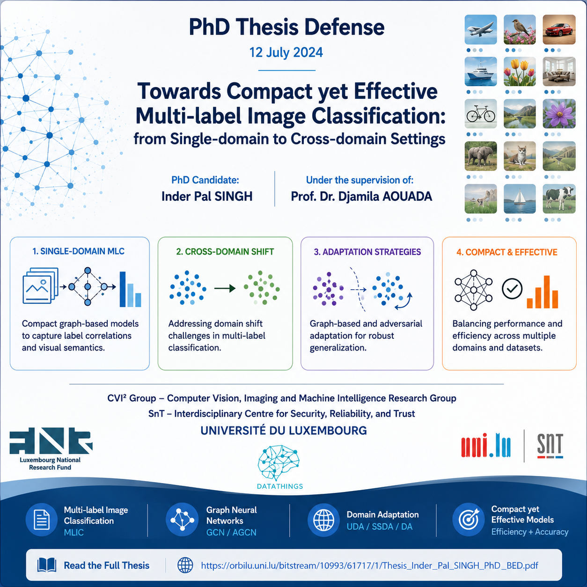

Thesis: Towards Compact yet Effective Multi-label Image Classification: from a Single Domain to Multiple Domains
This thesis studies how to build efficient yet accurate multi-label image classification models, including graph-based label dependency modeling, adaptive graph learning, and domain adaptation strategies for visual recognition under distribution shift.
- Connects IML-GCN, ML-AGCN, DA-AGCN and DDA-MLIC research directions.
- Focuses on compact, effective models for visual recognition.
- Extends the problem from single-domain learning to multiple-domain/domain-shift settings.